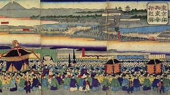

Meiji Restoration , in Japanese history, the political revolution in 1868 that brought about the final demise of the Tokugawa shogunate (military government)—thus ending the Edo (Tokugawa) period (1603–1867)—and, at least nominally, returned control of the country to direct imperial rule under Mutsuhito (the emperor Meiji). In a wider context, however, the Meiji Restoration of 1868 came to be identified with the subsequent era of major political, economic, and social change—the Meiji period (1868–1912)—that brought about the modernization and Westernization of the country.